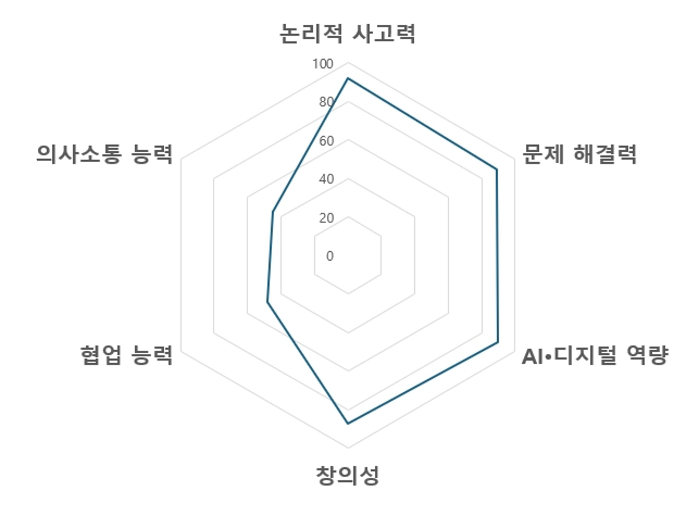
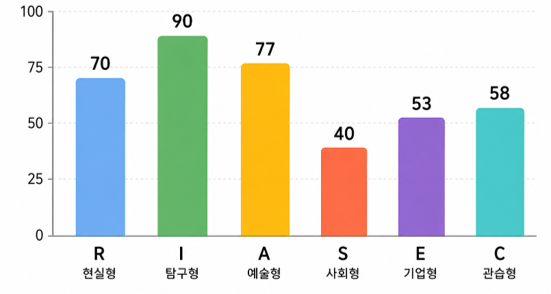
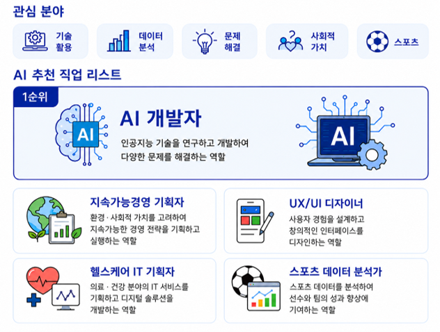

모듈 1. AI 진로 도우미
3 / 6
AI 진로 도우미가 리호의 흥미와 적성, 탐구 주제, 활동 기록 등 누적된 데이터를 기반으로 [핵심 역량], [직업 흥미 유형], [관심 분야]를 분석해주었습니다. 분석 결과를 참고하여 진로 탐색 계획을 완성하세요.
AI 도구 활용 절차

핵심 역량 계획
-
1
논리적 사고력과 문제 해결력이 강점이므로, 다른 역량은 더 이상 키울 필요가 없다.
-
2
협업 능력을 키우기 위해 친구들과 역할을 나누어 팀 프로젝트 활동을 해보겠다.
-
3
의사소통 능력이 강점이므로 발표와 토론 활동에 적극적으로 참여하겠다.
직업 흥미 유형 분석

직업 흥미 유형 계획
-
1
탐구형(I)과 예술형(A) 흥미가 낮으므로, 새로운 기술을 탐구하고 창의적인 콘텐츠 제작 활동에 참여하겠다.
-
2
사회형(S) 점수가 낮으므로 사람들과 함께하는 활동을 모두 피하겠다.
-
3
현실형(R)과 탐구형(I) 흥미를 활용하여 실생활 문제를 해결하는 프로젝트 활동에 참여하겠다.
관심 분야 분석

관심 분야 계획
-
1
기술 활용과 문제 해결에 관심이 있으므로, AI를 활용한 문제 해결 프로젝트 활동에 참여해보겠다.
-
2
사회적 가치에는 관심이 없으나, 환경 보호를 위한 경영 사례를 탐색해보겠다.
-
3
스포츠에 관심이 있으므로, 데이터 분석보다는 직접 운동만 해보겠다.